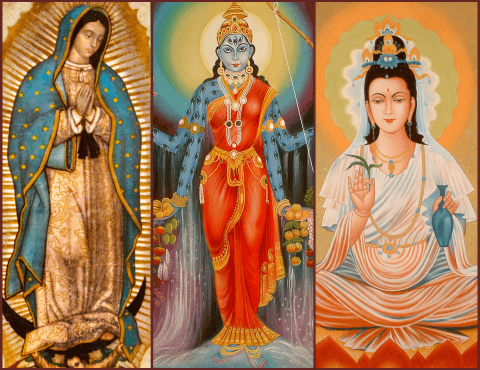
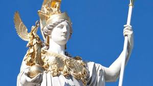
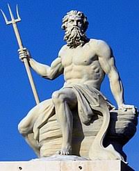
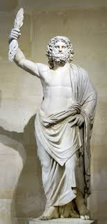

Greek Gods
First name
Last name
Phone number
Password
Aphrodite was the goddess of love, sex, and beauty. Unsurprisingly for a love goddess, she was said to have emerged from the foam generated when the severed testicles of her father, Uranus, were thrown into the sea by his son, the Titan Cronus.
Athena was the goddess of reason, wisdom, and war. She famously sprung fully formed from the forehead of Zeus. A major figure in the Odyssey, in which she instructed Odysseus, she also guided Perseus and Heracles through their trials. The Parthenon was her chief temple in Athens, which is named in her honor.
Poseidon is best known as the Greek sea god, but he was also the god of horses and of earthquakes. And he had some seriously strange children. Though humanoid, he fathered both the winged horse Pegasus and the Cyclops Polyphemus, who is blinded by Odysseus and his crew in the Odyssey. His Roman equivalent was Neptune.
With the assistance of Hades and Poseidon, Zeus overthrew his father, Cronus, king of the Titans, and becaame the chief deity in a new pantheon comprising mostly his siblings and children. In addition to controlling the weather, Zeus was noted for his chronic infidelity to his sister-wife, Hera. Among the results of his weakness for comely mortal women was Helen of Troy. His Roman equivalent was Jupiter.